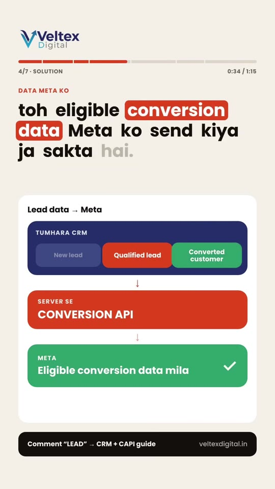
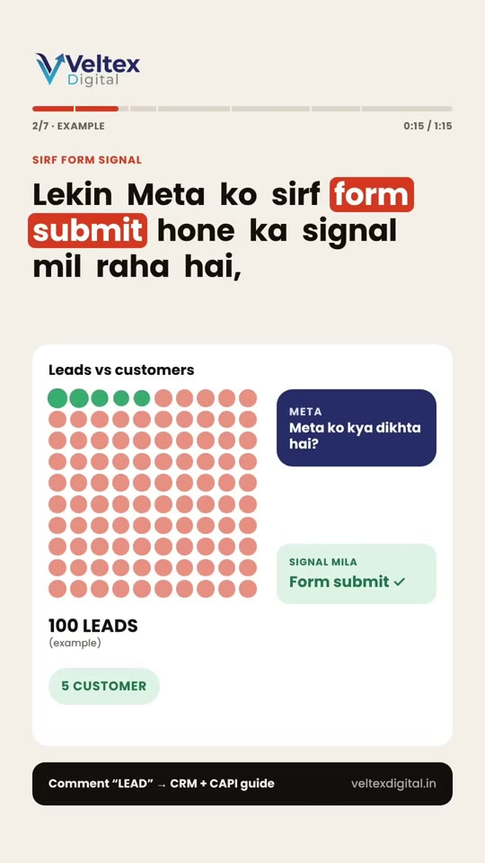
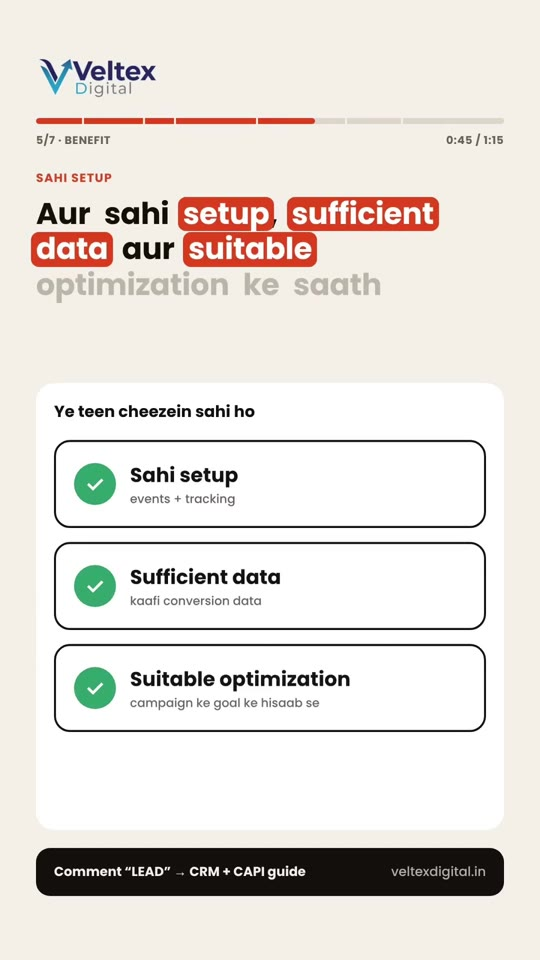
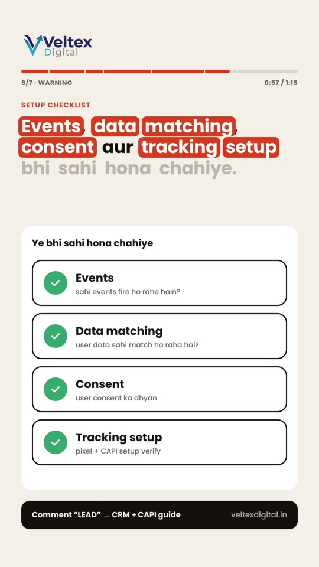

Meta-Ads · Foundations
CRM + Meta Conversions API (CAPI): Closing the Offline Lead-to-Customer Attribution Loop
A tactical guide addressing the primary failure mode of Meta lead generation campaigns: optimizing solely for cheap form submissions rather than closed-won revenue. By integrating your CRM with Meta’s Conversions API (CAPI), sales pipeline stage transitions (Qualified Lead, Opportunity, Converted Customer) are piped back into Meta Ads Manager server-side, enabling algorithmic optimization against true commercial value rather than low-intent form fillers.

The Lead Quality Breakdown & Architectural Fix
- The "Blind Algorithm" Trap: When running instant lead forms or basic pixel thank-you page conversions, Meta only receives a positive signal when a form is submitted. In a sample batch of 100 leads where only 5 convert to paying clients, Meta treats all 100 interactions as equal successes, continuously optimizing delivery towards whatever demographic fills forms at the lowest cost.
-
Pipeline Stage Mapping in CRM:
Structure your CRM (HubSpot, Salesforce, Zoho, or LeadSquared) with standardized lifecycle statuses:
Lead(Form submitted)Qualified Lead(BANT criteria met / phone consultation completed)Converted Customer(Contract signed / payment received)
-
Server-Side CAPI Event Transmission:
Whenever a sales rep advances a lead status to "Qualified" or "Converted", your CRM triggers a server webhook through Meta Conversions API sending an offline event (e.g.,
Leadwith custom parameterlead_event_source, orPurchase). - Algorithmic Audience Retargeting & Expansion: Meta ingests the offline conversion signals, matches customer identity parameters (hashed email, phone, external ID), and adjusts Advantage+ bidding models to find lookalikes who resemble your actual paying customers.
-
Audit the 4-Point CAPI Checklist:
Before expecting performance lifts, audit:
- Events: Ensure standard event names fire consistently without syntax drift.
- Data Matching: Pass comprehensive customer match keys (fn, ln, em, ph, city, zip) with SHA-256 hashing to maximize Event Quality Match Scores (target 8.0+).
- Consent: Respect regional privacy compliance frameworks (e.g., GDPR, DPDP Act).
- Tracking Setup: Verify server-side deduplication against browser pixels using identical
event_idvalues.
Architecture & Quality Figures



Verbatim Breakdown
| Time / Source | Spoken Audio (Hinglish/Hindi) | On-Screen Text |
|---|---|---|
| 00:00 - 00:07 | "Bhai, ek baat bata... Meta Ads se leads toh aa rahi hain, lekin Meta ko ye pata bhi hai ki unmein se customer kaun bana?" | 1/7 - HOOK EK BAAT BATA Bhai, ek baat bata... LEADS AA RAHI HAIN? Meta Ads se leads toh aa rahi hain, CUSTOMER KAUN? lekin Meta ko ye pata bhi hai ki unmein se customer kaun bana? |
| 00:08 - 00:16 | "Maan le, tumhe 100 leads mili. Unmein se sirf 5 log customer bane. Lekin Meta ko sirf form submit hone ka signal mil raha hai, actual sale ka nahi." | 2/7 - EXAMPLE 100 LEADS Maan le, tumhe 100 leads mili. 5 CUSTOMER Unmein se sirf 5 log customer bane. SIRF FORM SIGNAL Lekin Meta ko sirf form submit hone ka signal mil raha hai, actual sale ka nahi. SIGNAL MILA: Form submit ✓ | SIGNAL NAHI: Actual sale ✗ |
| 00:17 - 00:21 | "Toh Meta ko kaise pata chalega ki tumhare business ke liye kaunsi lead valuable thi?" | 3/7 - QUESTION KAUNSI LEAD VALUABLE? Toh Meta ko kaise pata chalega ki tumhare business ke liye kaunsi lead valuable thi? |
| 00:22 - 00:35 | "Yahin par kaam aata hai tumhara CRM aur Conversion API. Jab tum CRM mein lead ka status update karte ho — jaise qualified lead ya converted customer — toh eligible conversion data Meta ko send kiya ja sakta hai." | 4/7 - SOLUTION CRM + CAPI Yahin par kaam aata hai tumhara CRM aur Conversion API. STATUS UPDATE Jab tum CRM mein lead ka status update karte ho — QUALIFIED / CONVERTED jaise qualified lead ya converted customer — DATA META KO toh eligible conversion data Meta ko send kiya ja sakta hai. Lead data → Meta TUMHARA CRM: New lead | Qualified lead | Converted customer ↓ SERVER SE CONVERSION API ↓ META: Eligible conversion data mila ✓ |
| 00:36 - 00:42 | "Isse Meta ko sirf lead generate hone ka nahi, balki aage hone wale valuable actions ka signal bhi mil sakta hai." | 5/7 - BENEFIT SIRF LEAD NAHI Isse Meta ko sirf lead generate hone ka nahi, VALUABLE ACTIONS balki aage hone wale valuable actions ka signal bhi mil sakta hai. Aage hone wale valuable actions: Lead generate ✓ Qualified lead ★ Converted customer ★ SIGNAL → META → |
| 00:43 - 00:49 | "Aur sahi setup, sufficient data aur suitable optimization ke saath campaign quality improve karne mein help mil sakti hai." | 5/7 - BENEFIT SAHI SETUP Aur sahi setup, sufficient data aur suitable optimization ke saath campaign quality improve karne mein help mil sakti hai. Ye teen cheezein sahi ho: ✓ Sahi setup (events + tracking) ✓ Sufficient data (kaafi conversion data) ✓ Suitable optimization (campaign ke goal ke hisaab se) QUALITY IMPROVE MEIN HELP MIL SAKTI HAI (results campaign aur data par depend karte hain — guarantee nahi) |
| 00:50 - 00:58 | "Lekin bhai, sirf Conversion API connect kar dena enough nahi hai. Events, data matching, consent aur tracking setup bhi sahi hona chahiye." | 6/7 - WARNING SIRF CAPI NAHI Lekin bhai, sirf Conversion API connect kar dena enough nahi hai. SETUP CHECKLIST Events, data matching, consent aur tracking setup bhi sahi hona chahiye. Ye bhi sahi hona chahiye: ✓ Events (sahi events fire ho rahe hain?) ✓ Data matching (user data sahi match ho raha hai?) ✓ Consent (user consent ka dhyan) ✓ Tracking setup (pixel + CAPI setup verify) |
| 00:59 - 01:15 | "Agar tumhare Meta Ads mein leads toh aa rahi hain, lekin quality nahi, toh comment karo LEAD mein aapko complete CRM aur Conversion API Setup Guide send kar dunga. Aur follow karo Veltex Digital ko, kyunki hum sirf leads nahi, better marketing decisions lene mein bhi help karte hain!" | 7/7 - CTA LEADS HAIN Agar tumhare Meta Ads mein leads toh aa rahi hain, QUALITY NAHI lekin quality nahi, COMMENT "LEAD" toh Comment karo "LEAD" me aapko complete CRM aur Conversion API Setup Guide send kar dunga. FOLLOW KARO Follow karo Veltex Digital ko, kyunki hum sirf leads nahi, better marketing decisions lene mein bhi help karte hain! |
| Caption | — | (caption) Out of 100 leads, which became paying customers? Meta doesn't know without CRM + CAPI. Real-time qualification signals + server-side matching trains the algorithm on actual buyers. |
Tools & Integration Options
- Meta Conversions API (CAPI) Gateway: Cloud-hosted AWS/GCP instance for low-latency server-side event dispatching.
- Zapier / Make.com Webhooks: Middleware connectors passing CRM deal-stage updates (HubSpot/Salesforce/Zoho) directly into Meta Events Manager.
- Meta Events Manager Offline Event Sets: Native dashboard for tracking match rates and setting attribution windows.
Try This
- Log in to Meta Events Manager and inspect your Lead event’s Event Quality Match Score. If it is below 7.0/10, configure your web forms and CRM to pass hashed phone number, first name, and postal code.
- Create an automation in your CRM that sends a
QualifiedLeadorPurchaseserver event via Meta CAPI whenever a deal moves to "Closed Won". - Switch an existing lead generation campaign's optimization goal from raw Lead form submission to your custom Qualified Lead CAPI event once you register at least 50 qualified events per week.